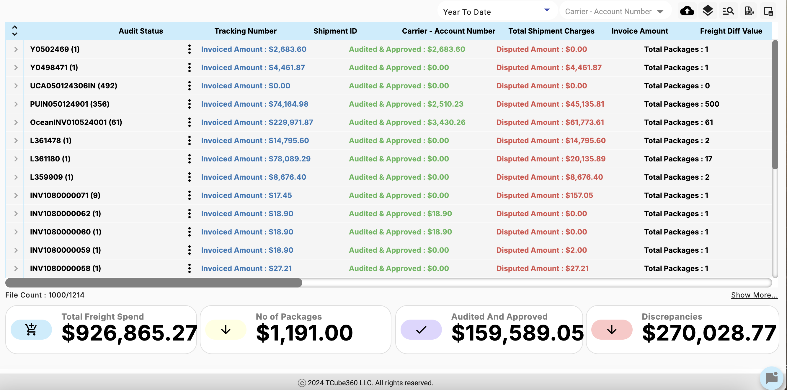

Audit Cube - Invoice Dashboard
Invoice Table Overview
The Invoice Dashboard displays a table format similar to other dashboards but focuses on invoice-related data. Key columns include Audit Status, Tracking Number, Shipment ID, Carrier Account Number, Total Shipment Charges, Invoice Amount, Freight Difference Value, and Disputed Amount.
Expandable Rows: Users can click the arrow next to an Invoice Number to expand the row and view additional details about that invoice, such as the items included, audit status, and dispute status.
Filter Tools: The icon next to the download button on the upper right corner of the dashboard allows users to filter tracking numbers by audit status, invoice number, dispute status, and dispute category.
Self-Help Options
In the Invoice Dashboard, users have access to additional options for each shipment to facilitate detailed review and audit. Here’s an overview of the tools and resources available upon selecting a shipment:
Audit Results Overview (Blue Paper Icon)
Clicking the blue paper icon next to a shipment will open a detailed Audit Results pop-up. This view provides comprehensive information on the audit status, enabling users to review findings and discrepancies. This feature is designed to mirror the audit result layout available on other dashboards, ensuring consistency across platforms.
Package Details (Tracking Number Link)
Clicking on the Tracking Number to the right of the audit result paper icon opens a view displaying Package Details within the shipment. This window offers in-depth information about each package, including specifics such as:
- Package Number: A unique identifier for each package within the shipment.
- Actual Weight and Billed Weight: The weight metrics are critical for validating shipment charges.
- Dimensions: Length, width, and height for each package, providing transparency on volumetric calculations that may impact freight costs.
Shipment Charges Breakdown (Click on Shipment Charge Amount)
Users can click on the Total Shipment Charges amount for a breakdown of all applicable charges and taxes. This Shipment Charges and Taxes window categorizes each charge associated with the shipment, detailing:
- Charge Code and Description: Each charge is identified by a unique code and description (e.g., OC Handling, Customs, Fuel Surcharge).
- Charge Value: The specific cost associated with each service or tax applied to the shipment, giving users a granular view of how charges are calculated.
Invoice Upload
The Invoice Upload button is located at the upper right corner of the dashboard. Users can upload invoices directly into the system, and it's crucial to note that the invoices must be in CSV format (unlike the XLSX format required in the Shipment Dashboard).
File Format Requirement: Ensure that the invoice file is correctly formatted as a CSV file before attempting to upload. Any deviations from this format will result in an upload failure.
Filtering and Sorting Invoices
The filter icon, located next to the Upload button, allows users to sort and filter invoices based on specific variables such as Invoice Number, Audit Status, Dispute Status, and Dispute Category.
How to Use Filters: For example, by selecting the Dispute Status filter, users can view all invoices currently under dispute, allowing them to prioritize and address outstanding issues.
Advanced Sorting: Users can also sort the invoice data by clicking on the column headers, making it easier to find specific invoices based on numerical or alphabetical order.
Troubleshooting Tips
Invoice Upload Issues:
Issue: If an invoice file fails to upload, it is likely due to an incorrect file format or improperly formatted data within the CSV.
Solution:
- Verify File Format: Double-check that the file is saved in CSV format. Excel or other file formats will not be accepted by the system.
- Check Data Formatting: Ensure that all required fields in the CSV are populated correctly and that the data adheres to the expected format (e.g., date formats, numerical values).
- Re-upload: After correcting any issues, try uploading the file again.
Filter Not Applying Correctly:
Issue: Filters might not return the expected results, especially if there are conflicting filters applied or if the data does not match the selected criteria.
Solution:
- Clear All Filters: Start by clearing all filters and reapplying them one by one to identify any conflicts.
- Expand Criteria: If the filter is too narrow, try expanding the criteria (e.g., selecting a broader date range or including multiple statuses) to capture the relevant data.
- Refresh the Dashboard: If the filter results still seem incorrect, try refreshing the dashboard to ensure that all data is up to date.
Dispute Workflow Issues:
Issue: Disputed invoices may not be moving through the workflow as expected, or users might not be able to track the dispute status accurately.
Solution:
- Check Workflow Settings: Verify that the dispute workflow settings are correctly configured in the system. This includes ensuring that all necessary statuses are active and that communication logs are being updated.
- Contact Support: If workflow issues persist, contact technical support to review the system settings and ensure that the workflow is functioning as intended.